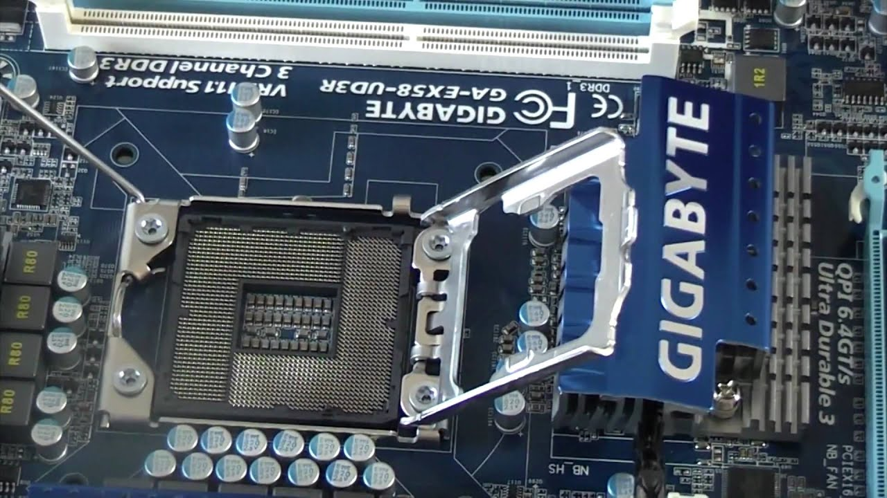
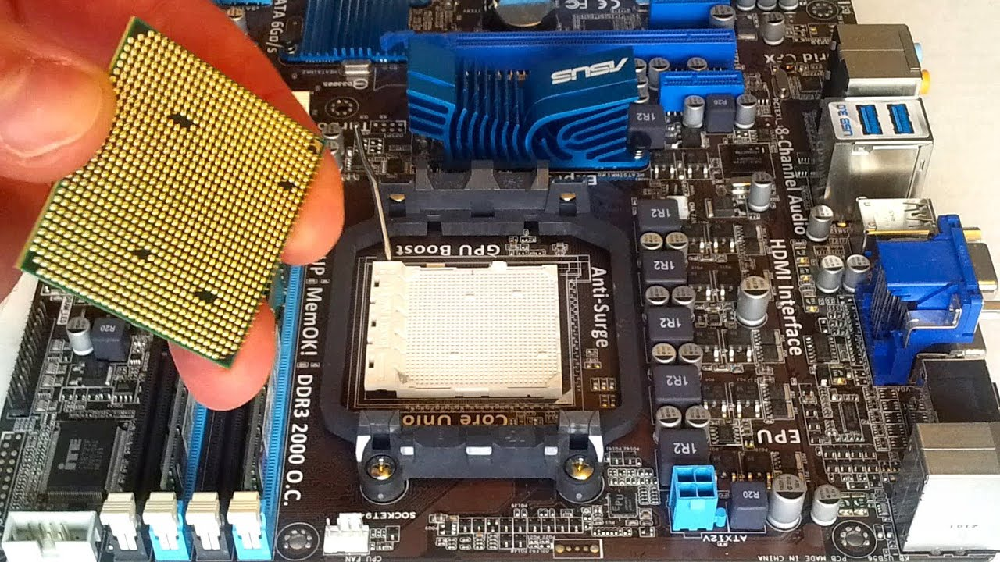
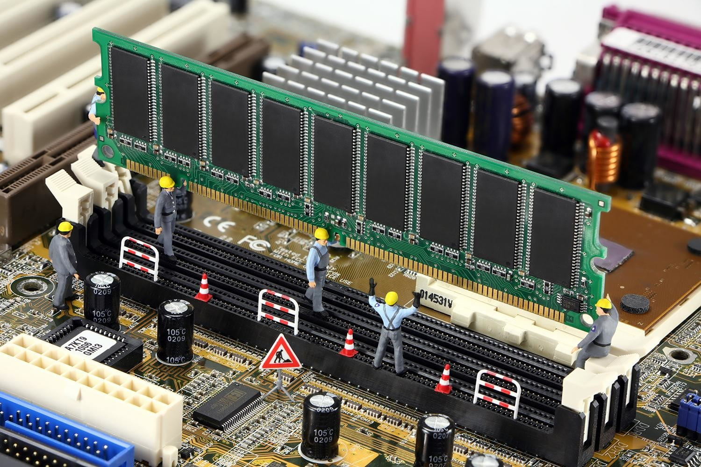
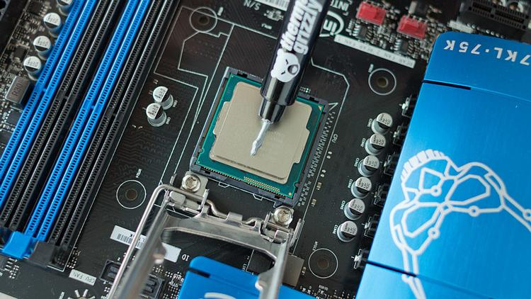

Processor, ram en processorkoeling plaatsen
CPU installeren voor Intel
Bij Intel zitten er pinnetjes in het moederbord, daarom moet je voorzichtig omgaan met het CPU gedeelte van het moederbord. Om te beginnen haal je de CPU uit het doosje, zorg ervoor dat je de onderkant (de goudkleurige kant) niet aanraakt. Maak het bevestigingssysteem van de CPU op het moederbord los. Kijk naar in welk hoekje van de Socket een pijltje staat, en match dit met het hoekje op de CPU, doe dan de CPU voorzichtig in de Socket. Doe het bevestigingssysteem we vast en laat de CPU zo zitten, dit gedeelte is nu klaar.
CPU installeren voor AMD
Bij AMD zitten er pinnetje op de CPU, dus wees hier voorzichtig mee. Om te beginnen haal je de CPU uit het doosje, zorg ervoor dat je de onderkant (de kant met de pinnetjes) niet aanraakt. Maak het bevestigingssysteem van de CPU op het moederbord los. Kijk naar in welk hoekje van de Socket een pijltje staat, en match dit met het hoekje op de CPU, doe dan de CPU voorzichtig in de Socket. Doe het bevestigingssysteem we vast en laat de CPU zo zitten, dit gedeelte is nu klaar.
Ram installeren
Kijk in de gebruiksaanwijzing van je moederbord welke ram slots het sterkste zijn. Open de ram slots die je nodig hebt, match de plek van het randje in de slot met de inkeping in de ramstick. Schuif de ramstick in de slot, dit mag met heel wat kracht, wat het ook vereist. Blijf drukken tot je de slots hoort dicht gaan. De ram is nu geïnstalleerd.
CPU koeler installeren
Als je de CPU koeler wilt plaatsen moet je eerst de koelpasta toevoegen, soms is dit van te voren al op de koeler, als dit bij jou zo is hoef je er niks extra bij te doen. Als dat er niet op zit moet je ongeveer 1 grote druppel koelpasta er op doen, de rest moet je gewoon bewaren. Daarna moet je de CPU koeler er op bevestigen volgens de handleiding van je CPU koeler. Die als je klaar bent het kabeltje van de CPU koeler in het moederbord op de juiste plek (raadpleeg hiervoor de gebruiksaanwijzing van je moederbord). Leg nu alles aan de kant en maak ruimte voor de behuizing.
Dit was Stap 3 van Deel 2, je kan nu doorgaan naar de volgende stap.